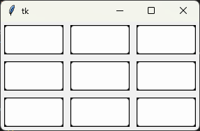

TicTacToe en Python
¡Redescubre el clásico juego de tres en raya con nuestra versión en Python! Desafía a tus amigos o a la inteligencia artificial y pon a prueba tu lógica.
Descripción del juego
Explicación de las reglas del TicTacToe, cómo se juega, objetivo, etc.
Implementación en Python
Explicación detallada de la implementación, lógica del juego, ejemplos de código, etc.
Descarga el juego
Descargar ahoraInstrucciones sobre cómo ejecutar el juego.